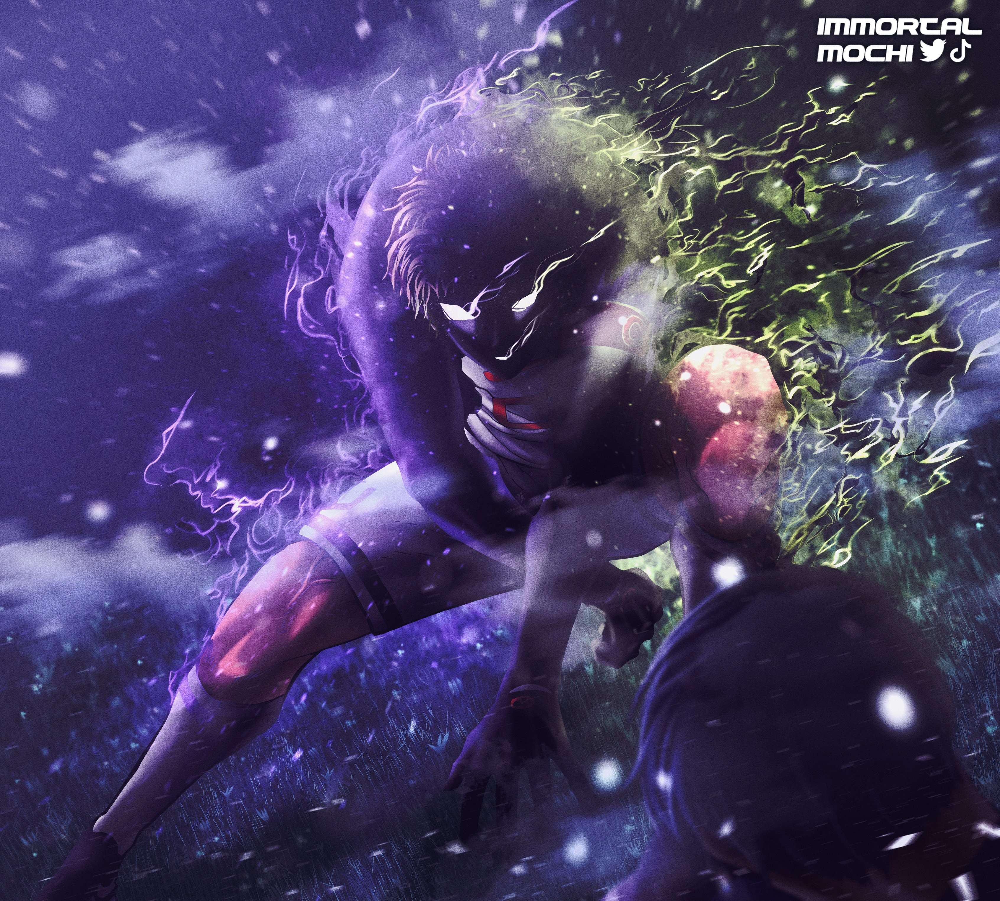
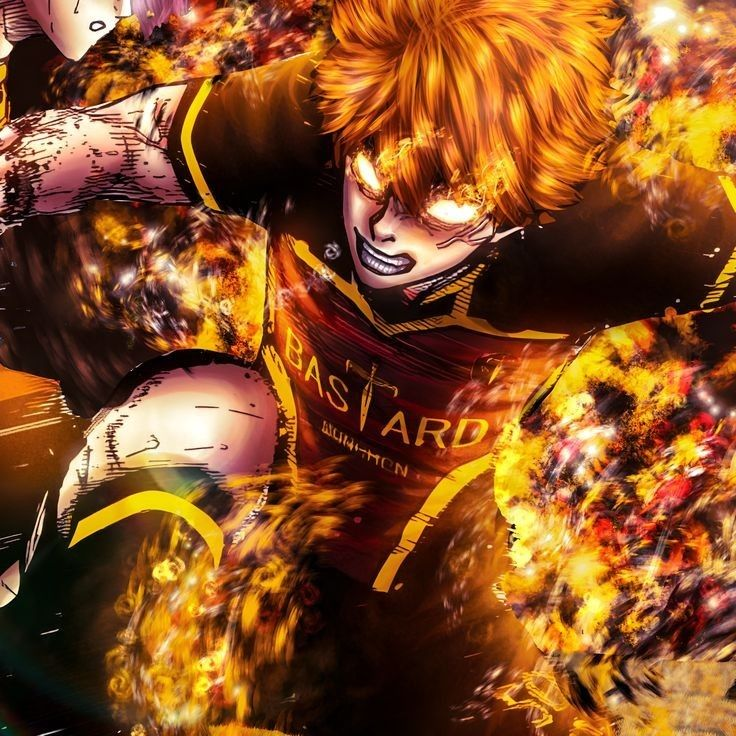

Just by judging his stats, Lorenzo's ability on defence is insane. Even though Blue Lock stats are just based between Blue Lock, we can assume that he is the peak of what a defender can achieve being a U-20, as Kaiser is considered the best striker having only one point less in Shooting (98), so is not mad to assume that Lorenzo is also the best defender of the Ng-11 players. In other stats he is pretty good, having an excellent passing for a defender and a solid speed that is enough to cover spaces or lock down players that try to get off mark. Offense and shotting are not really that important in his position, even tho he seems to be solid on those.


Oliver Aiku is a top-tier defender in Blue Lock (Ubers/Japan U-20) known for his high-level Metavision, elite spatial awareness, and strong physique. Originally a striker, he combines defensive solidity with superior prediction and passing, making him a "complete" defender who can transition to offense.


Meguru Bachira is an elite, striker focused playmaker in Blue Lock known for top tier dribbling, high level, creative ball control 94+, and an evolving monster style that transitioned from selfish to reading defender movements. His stats highlight high agility, 90+ balance, and incredible, unpredictable feints.


Yoichi Isagi stats in Blue Lock reflect an elite, highly intelligent playmaker and spatial awareness striker, rapidly evolving from a B-tier player to an S-tier threat. He thrives on high football IQ, meta-vision, and "direct shots," utilizing top-tier positioning rather than raw physical strength to dominate games.


Rensuke Kunigami in Blue Lock is a physical striker and tank archetype, defined by his immense strength, 188 cm (6'2") frame, and powerful ambidextrous shooting, particularly with his left foot. Post-Wildcard, his stats emphasize high physical prowess (strength, stamina, speed) to dominate defenders, often acting as a tankcdribbler who rarely loses possession against weaker opponents.